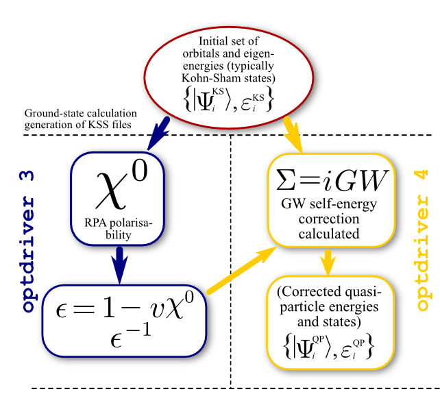

First lesson on GW¶
The quasi-particle band structure of Silicon, in the GW approximation.¶
This lesson aims at showing how to calculate self-energy corrections to the DFT Kohn-Sham eigenvalues in the GW approximation.
A brief description of the formalism and of the equations implemented in the code can be found in the GW_notes. The different formulas of the GW formalism have been written in a pdf document by Valerio Olevano (who also wrote the first version of this tutorial). For a much more consistent discussion of the theoretical aspects of the GW method we refer the reader to the review
“Quasiparticle calculations in solids”, by Aulbur WG, Jonsson L, Wilkins JW,
in Solid State Physics 54, 1-218 (2000), also available
here.
It is suggested to acknowledge the efforts of developers of the GW part of ABINIT, by citing the 2005 ABINIT publication.
The user should be familiarized with the four basic lessons of ABINIT, see the tutorial home page After this first tutorial on GW, you should read the second lesson on GW
This lesson should take about 2 hours.
1 General example of well converged GW calculation¶
Before beginning, you might consider to work in a different subdirectory as for the other lessons. Why not “Work_gw1”?
At the end of lesson 3, we computed the Kohn-Sham band structure of silicon. In this approximation, the band dispersion as well as the band widths are reasonable, but the band gaps are qualitatively wrong. Now, we will compute the band gaps much more accurately, using the so-called GW approximation.
We start by an example, in which we show how to perform in a single input file the calculation of the ground state density, the Kohn Sham band structure, the screening, and the GW corrections. We use reasonable values for the parameters of the calculation. The discussion on the convergence tests is postponed to the next paragraphs. We will see that GW calculations are much more time-consuming than the computation of the Kohn-Sham eigenvalues.
So, let us run immediately this calculation, and while it is running, we will explain what has been done.
In the directory ~abinit/tests/tutorial/Input/Work_gw1, copy the files ~abinit/tests/tutorial/Input/tgw1_x.files and tgw1_1.in, and modify the tgw1_x.files file as usual (see lesson 1).
Then, issue:
abinit < tgw1_x.files >& tgw1_1.log &
It is very important to run this job in background because it takes about 1 minute. In the meantime, you should read the following.
1.a The four steps of a GW calculation.¶
In order to perform a standard one-shot GW calculation one has to:
-
Run a converged Ground State calculation to obtain the self-consistent density.
-
Perform a non self-consistent run to compute the Kohn-Sham eigenvalues and the eigenfunctions including several empty states. Note that, unlike standard band structure calculations, here the KS states must be computed on a regular grid of k-points.
-
Use optdriver=3 to compute the independent-particle susceptibility ( χ0) on a regular grid of q -points, for at least two frequencies (usually, ω=0 and a large purely imaginary frequency - of the order of the plasmon frequency, a dozen of eV). The inverse dielectric matrix (ε-1) is then obtained via matrix inversion and stored in an external file (SCR). The list of q -points is automatically defined by the k-mesh used to generate the KS states in the previous step.
-
Use optdriver=4 to compute the self-energy (Σ) matrix element for a given set of k-points in order to obtain the GW quasiparticle energies Note that the k-point must belong to the k-mesh used to generate the WFK file in step 2.
The flowchart diagram of a standard one-shot run is depicted in the figure below.

The input file tgw1_1.in has precisely that structure: there are four datasets.
The first dataset performs the SCF calculation to get the density. The second dataset reads the previous density file and performs a NSCF run including several empty states. The third dataset reads the WFK file produced in the previous step and drives the computation of susceptibility and dielectric matrices, producing another specialized file, tgw1_xo_DS2_SCR (_SCR for “Screening”, actually the inverse dielectric matrix ε-1). Then, in the fourth dataset, the code calculates the quasiparticle energies for the 4th and 5th bands at the Γ point.
So, you can edit this tgw1_1.in file.
../tgw1_x.in tgw1_x.out tgw1i tgw1o tgw1 ../../../Psps_for_tests/14si.pspnc
# Crystalline silicon # Calculation of the GW corrections # Dataset 1: ground state calculation to get the density # Dataset 2: NSCF run to produce the WFK file for 10 k-points in IBZ # Dataset 3: calculation of the screening (epsilon^-1 matrix for W) # Dataset 4: calculation of the Self-Energy matrix elements (GW corrections) ndtset 4 ############ # Dataset 1 ############ # SCF-GS run nband1 6 tolvrs1 1.0e-10 ############ # Dataset 2 ############ # Definition of parameters for the calculation of the WFK file nband2 40 # Number of (occ and empty) bands to be computed nbdbuf2 5 iscf2 -2 getden2 -1 tolwfr2 1.0d-18 # Will stop when this tolerance is achieved ############ # Dataset 3 ############ # Calculation of the screening (epsilon^-1 matrix) optdriver3 3 # Screening calculation getwfk3 -1 # Obtain WFK file from previous dataset nband3 17 # Bands to be used in the screening calculation ecuteps3 3.6 # Cut-off energy of the planewave set to represent the dielectric matrix. # It is important to adjust this parameter. ppmfrq3 16.7 eV # Imaginary frequency where to calculate the screening ############ # Dataset 4 ############ # Calculation of the Self-Energy matrix elements (GW corrections) optdriver4 4 # Self-Energy calculation getwfk4 -2 # Obtain WFK file from dataset 1 getscr4 -1 # Obtain SCR file from previous dataset nband4 30 # Bands to be used in the Self-Energy calculation ecutsigx4 6.0 # Dimension of the G sum in Sigma_x. # (the dimension in Sigma_c is controlled by ecuteps) nkptgw4 1 # number of k-point where to calculate the GW correction kptgw4 # k-points in reduced coordinates -0.125 0.000 0.000 bdgw4 4 5 # calculate GW corrections for bands from 4 to 5 # Data common to the three different datasets # Definition of the unit cell: fcc acell 3*10.217 # This is equivalent to 10.217 10.217 10.217 rprim 0.0 0.5 0.5 # FCC primitive vectors (to be scaled by acell) 0.5 0.0 0.5 0.5 0.5 0.0 # Definition of the atom types ntypat 1 # There is only one type of atom znucl 14 # The keyword "znucl" refers to the atomic number of the # possible type(s) of atom. The pseudopotential(s) # mentioned in the "files" file must correspond # to the type(s) of atom. Here, the only type is Silicon. # Definition of the atoms natom 2 # There are two atoms typat 1 1 # They both are of type 1, that is, Silicon. xred # Reduced coordinate of atoms 0.0 0.0 0.0 0.25 0.25 0.25 # Definition of the k-point grid ngkpt 4 4 4 nshiftk 4 shiftk 0.5 0.5 0.5 # These shifts will be the same for all grids 0.5 0.0 0.0 0.0 0.5 0.0 0.0 0.0 0.5 istwfk *1 # This is mandatory in all the GW steps. # Definition of the planewave basis set (at convergence 16 Rydberg 8 Hartree) ecut 8.0 # Maximal kinetic energy cut-off, in Hartree # Definition of the SCF procedure nstep 20 # Maximal number of SCF cycles #toldfe 1.0d-6 # Will stop when this tolerance is achieved on total energy diemac 12.0 # Although this is not mandatory, it is worth to # precondition the SCF cycle. The model dielectric # function used as the standard preconditioner # is described in the "dielng" input variable section. # Here, we follow the prescription for bulk silicon. ## After modifying the following section, one might need to regenerate the pickle database with runtests.py -r #%%<BEGIN TEST_INFO> #%% [setup] #%% executable = abinit #%% [files] #%% files_to_test = #%% tgw1_1.out, tolnlines= 70, tolabs= 0.02, tolrel= 3.000e-02 #%% psp_files = 14si.pspnc #%% [paral_info] #%% max_nprocs = 4 #%% [extra_info] #%% authors = Unknown #%% keywords = GW #%% description = #%% Crystalline silicon #%% Calculation of the GW corrections #%% Dataset 1: ground state calculation and calculation of the WFK file for 10 k-points in IBZ #%% Dataset 2: calculation of the screening (epsilon^-1 matrix for W) #%% Dataset 3: calculation of the Self-Energy matrix elements (GW corrections) #%%<END TEST_INFO>
The dataset-independent part of this file (the last half of the file), contains the usual set of input variables describing the cell, atom types, number, position, planewave cut-off energy, SCF convergence parameters driving the Kohn-Sham band structure calculation. Then, for the fourth datasets, you will find specialized additional input variables.
1.b Generating the Kohn-Sham band structure: the WFK file.¶
Dataset 1 is a rather standard SCF calculation. It’s worth noticing that we use tolvrs to stop the SCF cycle because we want a well-converged KS potential to be used in the subsequent NSCF calculation. Dataset 2 computes 40 bands and we set nbdbuf to 5 so that only the first 35 states must be converged within tolwfr.
############ # Dataset 1 ############ # SCF-GS run nband1 6 tolvrs1 1.0e-10 ############ # Dataset 2 ############ # Definition of parameters for the calculation of the WFK file nband2 40 # Number of (occ and empty) bands to be computed nbdbuf2 5 iscf2 -2 getden2 -1 tolwfr2 1.0d-18 # Will stop when this tolerance is achieved
Important
The nbdbuf tricks allows us to save several minimization steps because the last bands usually require more iterations to converge
1.c Generating the screening: the SCR file.¶
In dataset 3, the calculation of the screening (susceptibility, dielectric matrix) is performed. We need to set optdriver=3 to do that:
optdriver3 3 # Screening calculation
The getwfk input variable is similar to other “get” input variables of ABINIT:
getwfk3 -1 # Obtain WFK file from previous dataset
In this case, it tells the code to use the WFK file calculated in the previous dataset.
Then, three input variables describe the computation:
nband3 17 # Bands used in the screening calculation ecut 8.0 # Cut-off energy of the planewave set to represent the wavefunctions ecuteps3 3.6 # Cut-off energy of the planewave set to represent the dielectric matrix
In this case, we use 17 bands to calculate the Kohn-Sham response function . A cut-off of 8 Hartree is used to represent the wavefunctions in the calculation of . The dimension of , as well as all the other matrices (, ) is determined by ecuteps=3.6 Hartree, giving 169 planewaves.
Finally, we define the frequencies at which the screening must be evaluated: ω=0.0 eV and the imaginary frequency ω= i 16.7 eV. The latter is determined by the input variable ppmfrq
ppmfrq3 16.7 eV # Imaginary frequency where to calculate the screening
The two frequencies are used to calculate the plasmon-pole model parameters. For the non-zero frequency it is recommended to use a value close to the plasmon frequency for the plasmon-pole model to work well. Plasmons frequencies are usually close to 0.5 Hartree. The parameters for the screening calculation are not far from the ones that give converged Energy Loss Function (-Im \epsilon^-1_00) spectra, So that one can start up by using indications from EELS calculations existing in literature.
1.d Computing the GW energies.¶
In dataset 4 the calculation of the Self-Energy matrix elements is performed. One needs to define the driver option, as well as the _WFK and _SCR files.
optdriver4 4 # Self-Energy calculation getwfk4 -2 # Obtain WFK file from dataset 2 getscr4 -1 # Obtain SCR file from previous dataset
The getscr input variable is similar to other “get” input variables of ABINIT.
Then, comes the definition of parameters needed to compute the self-energy. As for the computation of the susceptibility and dielectric matrices, one must define the set of bands, and two sets of planewaves:
nband4 30 # Bands to be used in the Self-Energy calculation
ecutsigx4 6.0 # Dimension of the G sum in Sigma_x
# (the dimension in Sigma_c is controlled by npweps)
In this case, nband controls the number of bands used to calculate the correlation part of the Self-Energy. ecutsigx gives the number of planewaves used to calculate σ x (the exchange part of the self-energy). The size of the planewave set used to compute Σc (the correlation part of the self-energy) is controlled by ecuteps (cannot be larger than the value used to generate the SCR file). However, it is taken equal to the number of planewave of Σx if the latter is smaller than the one for Σc.
Then, come the parameters defining the k-points and the band indices for which the quasiparticle energies will be computed:
nkptgw4 1 # number of k-point where to calculate the GW correction kptgw4 # k-points -0.125 0.000 0.000 bdgw4 4 5 # calculate GW corrections for bands from 4 to 5
nkptgw defines the number of k-points for which the GW corrections will be computed. The k-point reduced coordinates are specified in kptgw. At present, they MUST belong to the k-mesh used to generate the WFK file. Hence if you wish the GW correction in a particular k-point, you should choose a grid containing it. Usually this is done by taking the k-point grid where the convergence is achieved and shifting it such as at least one k-point is placed on the wished position in the Brillouin zone. bdgw gives the minimum/maximum band whose energies are calculated for the given k-point.
There is an additional parameter, called zcut, related to the self-energy computation. It is meant to avoid some divergences that might occur in the calculation due to integrable poles along the integration path.
1.e Examination of the output file.¶
Let us hope that your calculation has been completed, and that we can examine the output file. Open tgw1_1.out in your preferred editor and find the section corresponding to DATASET 3.
After the description of the unit cell and of the pseudopotentials, you will find the list of k-points used for the electrons and the grid of q-point (in the Irreducible part of the Brillouin Zone) on which the susceptibility and dielectric matrices will be computed. It is a set of BZ points defined as all the possible differences among the k-points ( q=k-k’ ) of the grid chosen to generate the WFK file. From the last statement it is clear the interest to choose homogeneous k-point grids, in order not to minimize the number of q-points.
After this section, the code prints the parameters of the FFT grid needed to represent the wavefunctions and to compute their convolution (required for the screening matrices). Then we have some information about the MPI distribution of the bands and the total number of valence electrons computed by integrating the density in the unit cell.
On the basis of the density, one can obtain the classical Drude plasmon frequency. The next lines calculate the average density of the system, and evaluate the r_s parameter, then compute the Drude plasmon frequency. This is the value used by default for ppmfrq. It is in fact the second frequency where the code calculates the dielectric matrix to adjust the plasmon-pole model parameters. It has been found that Drude plasma frequency is a reasonable value where to adjust the model. The control over this parameter is however left to the user in order to check that the result does not change when changing ppmfrq. If it is the case, then the plasmon-pole model is not appropriated and one should go beyond by taking into account a full dynamical dependence in the screening (see later, the contour-deformation method). However, the plasmon-pole model has been found to work well for a very large range of systems when focusing only on the real part of the GW corrections.
At the end of the screening calculation, the macroscopic dielectric constant is printed:
dielectric constant = 13.5073 dielectric constant without local fields = 15.0536
Note that the convergence in the dielectric constant DOES NOT guarantee the
convergence in the GW corrections. In fact, the dielectric constant is
representative of only one element i.e. the head of the full dielectric
matrix. Even if the convergence on the dielectric constant with local fields
takes somehow into account also other non-diagonal elements. In a GW
calculation all the ε-1 matrix is used to build the Self-Energy operator.
The dielectric constant here reported is the so-called RPA dielectric constant
due to the electrons. Although evaluated at zero frequency, it is understood
that the ionic response is not included (this term can be computed with DFPT
and ANADDB). The RPA dielectric constant restricted to electronic effects is
also not the same as the one computed in the RESPFN part of ABINIT, that
includes exchange-correlation effects.
We now enter the fourth dataset. As for dataset 3, after some general information (origin of WFK file, header, description of unit cell, k-points, q-points), the description of the FFT grid and jellium parameters, there is the echo of parameters for the plasmon-pole model, and the inverse dielectric function (the screening). The self-energy operator has been constructed, and one can evaluate the GW energies, for each of the states.
The final results are:
k = -0.125 0.000 0.000
Band E0 <VxcLDA> SigX SigC(E0) Z dSigC/dE Sig(E) E-E0 E
4 5.616 -11.115 -12.334 1.257 0.775 -0.290 -11.085 0.030 5.646
5 8.357 -10.140 -5.951 -3.336 0.779 -0.284 -9.476 0.664 9.021
E^0_gap 2.741
E^GW_gap 3.375
DeltaE^GW_gap 0.634
For the desired k-point, state 4, then state 5, one finds different information:
- E0 is the Kohn-Sham eigenenergy
- VxcLDA gives the average Kohn-Sham exchange-correlation potential
- SigX gives the exchange contribution to the self-energy
- SigC(E0) gives the correlation contribution to the self-energy, evaluated at the Kohn-Sham eigenenergy
- Z is the renormalisation factor
- dSigC/dE is the energy derivative of SigC with respect to the energy
- SigC(E) gives the correlation contribution to the self-energy, evaluated at the GW energy
- E-E0 is the difference between GW energy and Kohn-Sham eigenenergy
- E is the GW energy
In this case, the gap is also analyzed: E^0_gap is the direct Kohn-Sham gap at that k point (and spin, in the case of spin-polarized calculations), E^GW_gap is the GW one, and DeltaE^GW_gap is the difference. This direct gap is always computed between the band whose number is equal to the number of electrons in the cell divided by two (integer part, in case of spin-polarized calculation), and the next one. (Warning: for a metal, these two bands do not systematically lie below and above the Fermi energy - but the concept of a direct gap is not relevant in that case).
It is seen that the average Kohn-Sham exchange-correlation potential for the state 4 (a valence state) is very close to the exchange self-energy correction. For that state, the correlation correction is small, and the difference between Kohn-Sham and GW energies is also small (43 meV). By contrast, the exchange self-energy is much smaller than the average Kohn-Sham potential for the state 5 (a conduction state), but the correlation correction is much larger than for state 4. On the whole, the difference between Kohn- Sham and GW energies is not very large, but nevertheless, it is quite important when compared with the size of the gap.
2 Preparing convergence studies: Kohn-Sham structure (WFK file) and screening (SCR file)¶
In the following sections, we will perform different convergence studies. In order to keep the CPU time at a reasonable level, we will use fake WFK and SCR data. Moreover we will only consider the correction at the Γ point only. In this way, we will be able to verify convergence aspects that could be very cumbersome (at least in the framework of a tutorial) if more k-points were used. Testing the convergence with a Γ point only grid of k point represents a convenient approach although some caution should always be used.
In directory ~abinit/tests/tutorial/Input/Work_gw1, copy the file ../tgw1_2.in, and modify the tgw1_x.files file as usual. Edit the tgw1_2.in file, and take the time to examine it.
Then, issue:
abinit < tgw1_x.files >& tgw1_2.log &
After this step you will need the WFK and SCR files produced in this run for the next runs (up to 6.8). Move tgw1o_DS2_WFK to tgw1o_DS1_WFK and tgw1o_DS3_SCR to tgw1o_DS1_SCR.
The next sections are intended to show you how to find the converged parameters for a GW calculation. In principle, the following parameters might be used to decrease the CPU time and/or the memory requirements: optdriver=3 ecutwfn, ecuteps, nband. and for optdriver=4, ecutwfn, ecutsigx, nband.
Before 2008, the advice was indeed to check independently what was the best value for each of these. However, with the evolution of memory/disk space, as well as the advent of new techniques to diminish the number of bands that is needed (see e.g. F. Bruneval, X. Gonze, Phys. Rev. B 78, 085125 (2008), and the input variable gwcomp), standard calculations nowadays only need the tuning of nband ecuteps, simultaneously for optdriver=3 and =4. Indeed, ecutwfn and can have the default value of ecut, while ecutsigx can have the default value of 4*ecut for norm-conserving pseudopotentials, or pawecutdg for PAW calculations. Actually, the present tutorial needs to be updated to account for the current practice.
We begin by the convergence study on the three parameters needed in the self- energy calculation (optdriver=4): ecutwfn, ecutsigx, nband. This is because for these, we will not need a double dataset loop to check this convergence, and we will rely on the previously determined SCR file.
3 Convergence on the number of planewaves in the wavefunctions to calculate the Self-Energy (optional)¶
The convergence study is done in the input file tgw1_3.in. First, we check the convergence on the number of planewaves used to describe the wavefunctions, in the calculation of the Self-Energy. This will be done by defining five datasets, with increasing ecutwfn:
ndtset 5 ecutwfn: 3.0 ecutwfn+ 1.0
In directory ~abinit/tests/tutorial/Input/Work_gw1, copy the file ../tgw1_3.in, and modify the tgw1_x.files file as usual. Edit the tgw1_3.in file, and take the time to examine it.
Then, issue:
abinit < tgw1_x.files >& tgw1_3.log &
# Crystalline silicon # Calculation of the GW corrections # Convergence with respect to the number of planewaves to represent the wavefunctions ndtset 5 ecutwfn: 3.0 ecutwfn+ 1.0 # Calculation of the Self-Energy matrix elements (GW corrections) optdriver 4 getwfk 1 getscr 1 nband 100 ecutsigx 6.0 ppmfrq 16.7 eV nkptgw 1 kptgw 0.000 0.000 0.000 bdgw 4 5 # Definition of the unit cell: fcc acell 3*10.217 # This is equivalent to 10.217 10.217 10.217 rprim 0.0 0.5 0.5 # FCC primitive vectors (to be scaled by acell) 0.5 0.0 0.5 0.5 0.5 0.0 # Definition of the atom types ntypat 1 # There is only one type of atom znucl 14 # The keyword "znucl" refers to the atomic number of the # possible type(s) of atom. The pseudopotential(s) # mentioned in the "files" file must correspond # to the type(s) of atom. Here, the only type is Silicon. # Definition of the atoms natom 2 # There are two atoms typat 1 1 # They both are of type 1, that is, Silicon. xred # Reduced coordinate of atoms 0.0 0.0 0.0 0.25 0.25 0.25 # Definition of the planewave basis set (at convergence 16 Rydberg 8 Hartree) ecut 8.0 # Maximal kinetic energy cut-off, in Hartree # Sampling of the BZ ngkpt 1 1 1 nshiftk 1 shiftk 0.0 0.0 0.0 istwfk *1 # This is mandatory in all the GW steps. ## After modifying the following section, one might need to regenerate the pickle database with runtests.py -r #%%<BEGIN TEST_INFO> #%% [setup] #%% executable = abinit #%% test_chain = tgw1_2.in, tgw1_3.in, tgw1_4.in, tgw1_5.in, tgw1_6.in, tgw1_7.in, tgw1_8.in #%% [files] #%% files_to_test = #%% tgw1_3.out, tolnlines= 70, tolabs= 9.000e-03, tolrel= 3.000e-02 #%% psp_files = 14si.pspnc #%% [paral_info] #%% max_nprocs = 1 #%% [extra_info] #%% authors = Unknown #%% keywords = GW #%% description = #%% Crystalline silicon #%% Calculation of the GW corrections #%%<END TEST_INFO>
Edit the output file. The number of plane waves used for the wavefunctions in the computation of the self-energy is mentioned in the fragments of output:
SIGMA fundamental parameters: PLASMON POLE MODEL number of plane-waves for SigmaX 169 number of plane-waves for SigmaC and W 169 number of plane-waves for wavefunctions 59
Gathering the GW energies for each planewave set, one gets:
number of plane-waves for wavefunctions 59
Band E0 VxcLDA SigX SigC(E0) Z dSigC/dE Sig(E) E-E0 E
4 5.915 -11.490 -15.198 4.050 0.812 -0.232 -11.212 0.277 6.192
5 8.445 -9.431 -3.101 -5.381 0.822 -0.216 -8.651 0.781 9.226
number of plane-waves for wavefunctions 113
Band E0 VxcLDA SigX SigC(E0) Z dSigC/dE Sig(E) E-E0 E
4 5.915 -11.648 -15.253 3.853 0.807 -0.239 -11.448 0.200 6.115
5 8.445 -9.685 -3.234 -5.511 0.818 -0.222 -8.916 0.769 9.214
number of plane-waves for wavefunctions 137
Band E0 VxcLDA SigX SigC(E0) Z dSigC/dE Sig(E) E-E0 E
4 5.915 -11.639 -15.244 3.810 0.806 -0.241 -11.474 0.165 6.080
5 8.445 -9.675 -3.213 -5.557 0.818 -0.223 -8.935 0.740 9.185
number of plane-waves for wavefunctions 169
Band E0 VxcLDA SigX SigC(E0) Z dSigC/dE Sig(E) E-E0 E
4 5.915 -11.639 -15.244 3.801 0.806 -0.241 -11.481 0.157 6.072
5 8.445 -9.686 -3.216 -5.571 0.818 -0.223 -8.950 0.736 9.181
number of plane-waves for wavefunctions 259
Band E0 VxcLDA SigX SigC(E0) Z dSigC/dE Sig(E) E-E0 E
4 5.915 -11.650 -15.250 3.790 0.806 -0.241 -11.497 0.152 6.068
5 8.445 -9.697 -3.218 -5.583 0.818 -0.223 -8.965 0.733 9.178
So that ecutwfn=5.0 (%npwwfn=137) can be considered to lead to eigenenergies converged within 0.01 eV.
4 Convergence on the number of planewaves to calculate Σx (optional)¶
Second, we check the convergence on the number of planewaves in the calculation of Σx. This study in done in tgw1_4.in As mentioned in the documentation ecutsigx, safe values exist for ecutsigx, so that if you do not want to squeeze the CPU time for your calculation (you might gain only a few percent in some cases …), you can impose these values, and skip the corresponding convergence study.
In this lesson, this convergence study will be done by defining five datasets, with increasing ecutsigx:
ndtset 7 ecutsigx: 3.0 ecutsigx+ 1.0
In directory ~abinit/tests/tutorial/Input/Work_gw1, copy the file ../tgw1_4.in, and modify the tgw1_x.files file as usual. Edit the tgw1_4.in file, and take the time to examine it.
# Crystalline silicon # Calculation of the GW corrections # Convergence with respect to the number of planewaves in the sum to calculate SigmaX ndtset 7 ecutsigx: 3.0 ecutsigx+ 1.0 # Calculation of the Self-Energy matrix elements (GW corrections) optdriver 4 getwfk 1 getscr 1 ecutwfn 5.0 nband 100 ppmfrq 16.7 eV nkptgw 1 kptgw 0.000 0.000 0.000 bdgw 4 5 # Definition of the unit cell: fcc acell 3*10.217 # This is equivalent to 10.217 10.217 10.217 rprim 0.0 0.5 0.5 # FCC primitive vectors (to be scaled by acell) 0.5 0.0 0.5 0.5 0.5 0.0 # Definition of the atom types ntypat 1 # There is only one type of atom znucl 14 # The keyword "znucl" refers to the atomic number of the # possible type(s) of atom. The pseudopotential(s) # mentioned in the "files" file must correspond # to the type(s) of atom. Here, the only type is Silicon. # Definition of the atoms natom 2 # There are two atoms typat 1 1 # They both are of type 1, that is, Silicon. xred # Reduced coordinate of atoms 0.0 0.0 0.0 0.25 0.25 0.25 # Definition of the planewave basis set (at convergence 16 Rydberg 8 Hartree) ecut 8.0 # Maximal kinetic energy cut-off, in Hartree # Sampling of the BZ ngkpt 1 1 1 nshiftk 1 shiftk 0.0 0.0 0.0 istwfk *1 # This is mandatory in all the GW steps. ## After modifying the following section, one might need to regenerate the pickle database with runtests.py -r #%%<BEGIN TEST_INFO> #%% [setup] #%% executable = abinit #%% test_chain = tgw1_2.in, tgw1_3.in, tgw1_4.in, tgw1_5.in, tgw1_6.in, tgw1_7.in, tgw1_8.in #%% [files] #%% files_to_test = #%% tgw1_4.out, tolnlines= 70, tolabs= 9.000e-03, tolrel= 3.000e-02 #%% psp_files = 14si.pspnc #%% [paral_info] #%% max_nprocs = 4 #%% [extra_info] #%% authors = Unknown #%% keywords = GW #%% description = #%% Crystalline silicon #%% Calculation of the GW corrections #%% Convergence with respect to the number of planewaves in the sum to calculate SigmaX #%%<END TEST_INFO>
Then, issue:
abinit < tgw1_x.files >& tgw1_4.log &
Edit the output file. The number of plane waves used for Σx is mentioned in the fragments of output:
SIGMA fundamental parameters: PLASMON POLE MODEL number of plane-waves for SigmaX 59 number of plane-waves for SigmaC and W 59
Gathering the GW energies for each planewave set, one gets:
number of plane-waves for SigmaX 59
number of plane-waves for SigmaC and W 59
Band E0 VxcLDA SigX SigC(E0) Z dSigC/dE Sig(E) E-E0 E
4 5.915 -11.639 -15.194 3.886 0.808 -0.238 -11.372 0.268 6.183
5 8.445 -9.675 -3.174 -5.573 0.818 -0.222 -8.916 0.759 9.204
number of plane-waves for SigmaX 113
number of plane-waves for SigmaC and W 113
Band E0 VxcLDA SigX SigC(E0) Z dSigC/dE Sig(E) E-E0 E
4 5.915 -11.639 -15.236 3.825 0.806 -0.240 -11.455 0.184 6.099
5 8.445 -9.675 -3.208 -5.561 0.818 -0.222 -8.934 0.741 9.186
number of plane-waves for SigmaX 137
number of plane-waves for SigmaC and W 137
Band E0 VxcLDA SigX SigC(E0) Z dSigC/dE Sig(E) E-E0 E
4 5.915 -11.639 -15.241 3.815 0.806 -0.240 -11.468 0.172 6.087
5 8.445 -9.675 -3.211 -5.558 0.818 -0.223 -8.933 0.741 9.187
number of plane-waves for SigmaX 169
number of plane-waves for SigmaC and W 169
Band E0 VxcLDA SigX SigC(E0) Z dSigC/dE Sig(E) E-E0 E
4 5.915 -11.639 -15.244 3.810 0.806 -0.241 -11.474 0.165 6.080
5 8.445 -9.675 -3.213 -5.557 0.818 -0.223 -8.935 0.740 9.185
number of plane-waves for SigmaX 259
number of plane-waves for SigmaC and W 169
Band E0 VxcLDA SigX SigC(E0) Z dSigC/dE Sig(E) E-E0 E
4 5.915 -11.639 -15.246 3.810 0.806 -0.241 -11.475 0.164 6.079
5 8.445 -9.675 -3.215 -5.557 0.818 -0.223 -8.937 0.738 9.183
number of plane-waves for SigmaX 283
number of plane-waves for SigmaC and W 169
Band E0 VxcLDA SigX SigC(E0) Z dSigC/dE Sig(E) E-E0 E
4 5.915 -11.639 -15.246 3.810 0.806 -0.241 -11.475 0.164 6.079
5 8.445 -9.675 -3.215 -5.557 0.818 -0.223 -8.937 0.738 9.183
number of plane-waves for SigmaX 283
number of plane-waves for SigmaC and W 169
Band E0 VxcLDA SigX SigC(E0) Z dSigC/dE Sig(E) E-E0 E
4 5.915 -11.639 -15.246 3.810 0.806 -0.241 -11.475 0.164 6.079
5 8.445 -9.675 -3.215 -5.557 0.818 -0.223 -8.937 0.738 9.183
So that ecutsigx=6.0 (npwsigx=169) can be considered converged within 0.01 eV.
5 Convergence on the number of bands to calculate Σc (important)¶
At last, as concerns the computation of the self-energy, we check the convergence on the number of bands in the calculation of Σc. This convergence study is rather important, usually, BUT it can be done at the same time as the convergence study for the number of bands for the dielectric matrix.
The convergence on the number of bands to calculate the Self-Energy will be done by defining five datasets, with increasing nband:
ndtset 5 nband: 50 nband+ 50
In directory ~abinit/tests/tutorial/Input/Work_gw1, copy the file
../tgw1_5.in, and modify the tgw1_x.files file as usual. Edit the tgw1_5.in
file, and take the time to examine it.
Then, issue:
abinit < tgw1_x.files >& tgw1_5.log &
# Crystalline silicon # Calculation of the GW corrections # Convergence with respect to the number of bands ndtset 5 nband: 50 nband+ 50 # Calculation of the Self-Energy matrix elements (GW corrections) optdriver 4 getwfk 1 getscr 1 ecutwfn 5.0 ecutsigx 6.0 ppmfrq 16.7 eV nkptgw 1 kptgw 0.000 0.000 0.000 bdgw 4 5 # Definition of the unit cell: fcc acell 3*10.217 # This is equivalent to 10.217 10.217 10.217 rprim 0.0 0.5 0.5 # FCC primitive vectors (to be scaled by acell) 0.5 0.0 0.5 0.5 0.5 0.0 # Definition of the atom types ntypat 1 # There is only one type of atom znucl 14 # The keyword "znucl" refers to the atomic number of the # possible type(s) of atom. The pseudopotential(s) # mentioned in the "files" file must correspond # to the type(s) of atom. Here, the only type is Silicon. # Definition of the atoms natom 2 # There are two atoms typat 1 1 # They both are of type 1, that is, Silicon. xred # Reduced coordinate of atoms 0.0 0.0 0.0 0.25 0.25 0.25 # Definition of the planewave basis set (at convergence 16 Rydberg 8 Hartree) ecut 8.0 # Maximal kinetic energy cut-off, in Hartree # Sampling of the BZ ngkpt 1 1 1 nshiftk 1 shiftk 0.0 0.0 0.0 istwfk *1 # This is mandatory in all the GW steps. ## After modifying the following section, one might need to regenerate the pickle database with runtests.py -r #%%<BEGIN TEST_INFO> #%% [setup] #%% executable = abinit #%% test_chain = tgw1_2.in, tgw1_3.in, tgw1_4.in, tgw1_5.in, tgw1_6.in, tgw1_7.in, tgw1_8.in #%% [files] #%% files_to_test = #%% tgw1_5.out, tolnlines= 70, tolabs= 9.000e-03, tolrel= 3.000e-02 #%% psp_files = 14si.pspnc #%% [paral_info] #%% max_nprocs = 4 #%% [extra_info] #%% authors = Unknown #%% keywords = GW #%% description = #%% Crystalline silicon #%% Calculation of the GW corrections #%%<END TEST_INFO>
Edit the output file. The number of bands used for the self-energy is mentioned in the fragments of output:
SIGMA fundamental parameters: PLASMON POLE MODEL number of plane-waves for SigmaX 169 number of plane-waves for SigmaC and W 169 number of plane-waves for wavefunctions 137 number of bands 50
Gathering the GW energies for each number of bands, one gets:
number of bands 50
4 5.915 -11.639 -15.244 3.878 0.807 -0.240 -11.419 0.220 6.135
5 8.445 -9.675 -3.213 -5.492 0.819 -0.222 -8.881 0.794 9.239
number of bands 100
4 5.915 -11.639 -15.244 3.810 0.806 -0.241 -11.474 0.165 6.080
5 8.445 -9.675 -3.213 -5.557 0.818 -0.223 -8.935 0.740 9.185
number of bands 150
4 5.915 -11.639 -15.244 3.805 0.806 -0.241 -11.478 0.161 6.076
5 8.445 -9.675 -3.213 -5.563 0.818 -0.223 -8.940 0.735 9.180
number of bands 200
4 5.915 -11.639 -15.244 3.804 0.806 -0.241 -11.479 0.160 6.075
5 8.445 -9.675 -3.213 -5.564 0.818 -0.223 -8.940 0.734 9.180
number of bands 250
4 5.915 -11.639 -15.244 3.804 0.806 -0.241 -11.479 0.160 6.075
5 8.445 -9.675 -3.213 -5.564 0.818 -0.223 -8.941 0.734 9.179
So that nband=100 can be considered converged within 0.01 eV.
At this stage, we know that for the self-energy computation, we need ecutwfn=5.0 ecutsigx=6.0, nband=100 .
6 Convergence on the number of planewaves in the wavefunctions to calculate the screening (ε-1) (optional)¶
Now, we come back to the calculation of the screening. Adequate convergence studies will couple the change of parameters for optdriver=3 with a computation of the GW energy changes. One cannot rely on the convergence of the macroscopic dielectric constant to assess the convergence of the GW energies.
As a consequence, we will define a double loop over the datasets:
ndtset 10 udtset 5 2
The datasets 12,22,32,42 and 52, drive the computation of the GW energies:
# Calculation of the Self-Energy matrix elements (GW corrections) optdriver?2 4 getscr?2 -1 ecutwfn?2 5.0 ecutsigx 6.0 nband?2 100
The datasets 11,21,31,41 and 51, drive the corresponding computation of the screening:
# Calculation of the screening (epsilon^-1 matrix) optdriver?1 3
In this latter series, we will have to vary the three different parameters ecutwfn, ecuteps and nband.
First, we check the convergence on the number of planewaves to describe the wavefunctions, in the calculation of the screening. This will be done by defining five datasets, with increasing ecutwfn:
ecutwfn:? 3.0 ecutwfn+? 1.0
In directory ~abinit/tests/tutorial/Input/Work_gw1, copy the file
../tgw1_6.in, and modify the tgw1_x.files file as usual. Edit the tgw1_6.in
file, and take the time to examine it.
Then, issue:
abinit < tgw1_x.files >& tgw1_6.log &
# Crystalline silicon # Calculation of the GW corrections ndtset 10 udtset 5 2 # Calculation of the screening (epsilon^-1 matrix) optdriver?1 3 ecuteps 6.0 nband?1 25 # Convergence with respect to the number of planewaves in wavefunctions to calculate epsilon^-1 ecutwfn:? 3.0 ecutwfn+? 1.0 # Calculation of the Self-Energy matrix elements (GW corrections) optdriver?2 4 getscr?2 -1 ecutwfn?2 5.0 ecutsigx 6.0 nband?2 100 nkptgw 1 kptgw 0.000 0.000 0.000 bdgw 4 5 # GW calculation general parameters getwfk 1 ppmfrq 16.7 eV # Definition of the unit cell: fcc acell 3*10.217 # This is equivalent to 10.217 10.217 10.217 rprim 0.0 0.5 0.5 # FCC primitive vectors (to be scaled by acell) 0.5 0.0 0.5 0.5 0.5 0.0 # Definition of the atom types ntypat 1 # There is only one type of atom znucl 14 # The keyword "znucl" refers to the atomic number of the # possible type(s) of atom. The pseudopotential(s) # mentioned in the "files" file must correspond # to the type(s) of atom. Here, the only type is Silicon. # Definition of the atoms natom 2 # There are two atoms typat 1 1 # They both are of type 1, that is, Silicon. xred # Reduced coordinate of atoms 0.0 0.0 0.0 0.25 0.25 0.25 # Definition of the planewave basis set (at convergence 16 Rydberg 8 Hartree) ecut 8.0 # Maximal kinetic energy cut-off, in Hartree # Sampling of the BZ ngkpt 1 1 1 nshiftk 1 shiftk 0.0 0.0 0.0 istwfk *1 # This is mandatory in all the GW steps. ## After modifying the following section, one might need to regenerate the pickle database with runtests.py -r #%%<BEGIN TEST_INFO> #%% [setup] #%% executable = abinit #%% test_chain = tgw1_2.in, tgw1_3.in, tgw1_4.in, tgw1_5.in, tgw1_6.in, tgw1_7.in, tgw1_8.in #%% [files] #%% files_to_test = #%% tgw1_6.out, tolnlines= 70, tolabs= 7.000e-02, tolrel= 3.000e-02 #%% psp_files = 14si.pspnc #%% [paral_info] #%% max_nprocs = 4 #%% [extra_info] #%% authors = Unknown #%% keywords = GW #%% description = #%% Crystalline silicon #%% Calculation of the GW corrections #%%<END TEST_INFO>
Edit the output file. The number of plane waves used for the wavefunctions in the computation of the screening is mentioned in the fragments of output:
EPSILON^-1 parameters (SCR file): dimension of the eps^-1 matrix 169 number of plane-waves for wavefunctions 59
Gathering the macroscopic dielectric constant and GW energies for each planewave set, one gets:
dielectric constant = 99.4320
dielectric constant without local fields = 147.6068
number of plane-waves for wavefunctions 59
4 5.915 -11.639 -15.244 3.843 0.811 -0.233 -11.446 0.193 6.108
5 8.445 -9.675 -3.213 -5.527 0.819 -0.221 -8.909 0.766 9.211
dielectric constant = 99.8529
dielectric constant without local fields = 144.5675
number of plane-waves for wavefunctions 113
4 5.915 -11.639 -15.244 3.789 0.804 -0.244 -11.492 0.147 6.063
5 8.445 -9.675 -3.213 -5.564 0.817 -0.224 -8.941 0.734 9.179
dielectric constant = 99.5260
dielectric constant without local fields = 143.7201
number of plane-waves for wavefunctions 137
4 5.915 -11.639 -15.244 3.779 0.804 -0.243 -11.500 0.140 6.055
5 8.445 -9.675 -3.213 -5.568 0.816 -0.226 -8.945 0.729 9.175
dielectric constant = 98.2593
dielectric constant without local fields = 142.5976
number of plane-waves for wavefunctions 169
4 5.915 -11.639 -15.244 3.772 0.802 -0.248 -11.505 0.134 6.049
5 8.445 -9.675 -3.213 -5.573 0.815 -0.227 -8.951 0.724 9.169
dielectric constant = 96.8379
dielectric constant without local fields = 141.0644
number of plane-waves for wavefunctions 259
4 5.915 -11.639 -15.244 3.769 0.804 -0.244 -11.508 0.131 6.047
5 8.445 -9.675 -3.213 -5.578 0.815 -0.227 -8.954 0.721 9.166
So that ecutwfn=4.0 (%npwwfn=113) can be considered to lead to eigenenergies converged within 0.01 eV.
7 Convergence on the number of bands to calculate the screening (ε-1) (important)¶
This convergence study is rather important. It can be done at the same time as the convergence study for the number of bands for the self-energy. Note that the number of bands used to calculate both the screening and the self-energy can be lowered by a large amount by resorting to the extrapolar technique (see the input variable gwcomp).
Second, we check the convergence on the number of bands in the calculation of the screening. This will be done by defining five datasets, with increasing nband:
nband11 25 nband21 50 nband31 100 nband41 150 nband51 200
In directory ~abinit/tests/tutorial/Input/Work_gw1, copy the file ../tgw1_7.in, and modify the tgw1_x.files file as usual. Edit the tgw1_7.in file, and take the time to examine it.
Then, issue:
abinit < tgw1_x.files >& tgw1_7.log &
# Crystalline silicon # Calculation of the GW corrections ndtset 10 udtset 5 2 # Convergence with respect to the number of bands to calculate epsilon^-1 nband11 25 nband21 50 nband31 100 nband41 150 nband51 200 # Calculation of the screening (epsilon^-1 matrix) optdriver?1 3 ecuteps 6.0 ecutwfn?1 4.0 # Calculation of the Self-Energy matrix elements (GW corrections) optdriver?2 4 getscr?2 -1 ecutwfn?2 5.0 ecutsigx 6.0 nband?2 100 nkptgw?2 1 kptgw?2 0.000 0.000 0.000 bdgw?2 4 5 getwfk 1 ppmfrq 16.7 eV # Definition of the unit cell: fcc acell 3*10.217 # This is equivalent to 10.217 10.217 10.217 rprim 0.0 0.5 0.5 # FCC primitive vectors (to be scaled by acell) 0.5 0.0 0.5 0.5 0.5 0.0 # Definition of the atom types ntypat 1 # There is only one type of atom znucl 14 # The keyword "znucl" refers to the atomic number of the # possible type(s) of atom. The pseudopotential(s) # mentioned in the "files" file must correspond # to the type(s) of atom. Here, the only type is Silicon. # Definition of the atoms natom 2 # There are two atoms typat 1 1 # They both are of type 1, that is, Silicon. xred # Reduced coordinate of atoms 0.0 0.0 0.0 0.25 0.25 0.25 # Definition of the planewave basis set (at convergence 16 Rydberg 8 Hartree) ecut 8.0 # Maximal kinetic energy cut-off, in Hartree # Sampling of the BZ ngkpt 1 1 1 nshiftk 1 shiftk 0.0 0.0 0.0 istwfk *1 # This is mandatory in all the GW steps. ## After modifying the following section, one might need to regenerate the pickle database with runtests.py -r #%%<BEGIN TEST_INFO> #%% [setup] #%% executable = abinit #%% test_chain = tgw1_2.in, tgw1_3.in, tgw1_4.in, tgw1_5.in, tgw1_6.in, tgw1_7.in, tgw1_8.in #%% [files] #%% files_to_test = #%% tgw1_7.out, tolnlines= 70, tolabs= 7.000e-02, tolrel= 3.000e-02 #%% psp_files = 14si.pspnc #%% [paral_info] #%% max_nprocs = 4 #%% [extra_info] #%% authors = Unknown #%% keywords = GW #%% description = #%% Crystalline silicon #%% Calculation of the GW corrections #%%<END TEST_INFO>
Edit the output file. The number of bands used for the wavefunctions in the computation of the screening is mentioned in the fragments of output:
EPSILON^-1 parameters (SCR file): dimension of the eps^-1 matrix 169 number of plane-waves for wavefunctions 113 number of bands 25
Gathering the macroscopic dielectric constant and GW energies for each number of bands, one gets:
dielectric constant = 99.8529
dielectric constant without local fields = 144.5675
number of bands 25
4 5.915 -11.639 -15.244 3.789 0.804 -0.244 -11.492 0.147 6.063
5 8.445 -9.675 -3.213 -5.564 0.817 -0.224 -8.941 0.734 9.179
dielectric constant = 100.9503
dielectric constant without local fields = 144.5701
number of bands 50
4 5.915 -11.639 -15.244 3.624 0.806 -0.241 -11.624 0.015 5.930
5 8.445 -9.675 -3.213 -5.738 0.814 -0.228 -9.085 0.590 9.035
dielectric constant = 101.2722
dielectric constant without local fields = 144.5703
number of bands 100
4 5.915 -11.639 -15.244 3.577 0.807 -0.239 -11.662 -0.023 5.892
5 8.445 -9.675 -3.213 -5.792 0.813 -0.230 -9.131 0.544 8.989
dielectric constant = 101.3772
dielectric constant without local fields = 144.5703
number of bands 150
4 5.915 -11.639 -15.244 3.568 0.807 -0.240 -11.669 -0.030 5.885
5 8.445 -9.675 -3.213 -5.800 0.813 -0.230 -9.137 0.538 8.983
dielectric constant = 101.3814
dielectric constant without local fields = 144.5703
number of bands 200
4 5.915 -11.639 -15.244 3.568 0.807 -0.240 -11.669 -0.030 5.885
5 8.445 -9.675 -3.213 -5.801 0.813 -0.230 -9.137 0.537 8.983
So that the computation using 100 bands can be considered converged within 0.01 eV.
8 Convergence on the dimension of the screening ε-1 matrix (important)¶
Third, we check the convergence on the number of plane waves in the calculation of the screening. This will be done by defining six datasets, with increasing ecuteps:
ecuteps:? 3.0 ecuteps+? 1.0
In directory ~abinit/tests/tutorial/Input/Work_gw1, copy the file ../tgw1_8.in, and modify the tgw1_x.files file as usual. Edit the tgw1_8.in file, and take the time to examine it.
Then, issue:
abinit < tgw1_x.files >& tgw1_8.log &
# Crystalline silicon # Calculation of the GW corrections ndtset 12 udtset 6 2 # Calculation of the screening (epsilon^-1 matrix) optdriver?1 3 nband?1 100 ecutwfn?1 4.0 # Convergence with respect to the dimension of epsilon^-1 matrix ecuteps:? 3.0 ecuteps+? 1.0 # Calculation of the Self-Energy matrix elements (GW corrections) optdriver?2 4 getscr?2 -1 ecutwfn?2 5.0 ecutsigx 6.0 nband?2 100 nkptgw 1 kptgw 0.000 0.000 0.000 bdgw 4 5 icutcoul?2 3 # old deprecated value of icutcoul, only used for legacy # GW calculation general parameters getwfk 1 ppmfrq 16.7 eV # Definition of the unit cell: fcc acell 3*10.217 # This is equivalent to 10.217 10.217 10.217 rprim 0.0 0.5 0.5 # FCC primitive vectors (to be scaled by acell) 0.5 0.0 0.5 0.5 0.5 0.0 # Definition of the atom types ntypat 1 # There is only one type of atom znucl 14 # The keyword "znucl" refers to the atomic number of the # possible type(s) of atom. The pseudopotential(s) # mentioned in the "files" file must correspond # to the type(s) of atom. Here, the only type is Silicon. # Definition of the atoms natom 2 # There are two atoms typat 1 1 # They both are of type 1, that is, Silicon. xred # Reduced coordinate of atoms 0.0 0.0 0.0 0.25 0.25 0.25 # Definition of the planewave basis set (at convergence 16 Rydberg 8 Hartree) ecut 8.0 # Maximal kinetic energy cut-off, in Hartree # Sampling of the BZ ngkpt 1 1 1 nshiftk 1 shiftk 0.0 0.0 0.0 istwfk *1 # This is mandatory in all the GW steps. ## After modifying the following section, one might need to regenerate the pickle database with runtests.py -r #%%<BEGIN TEST_INFO> #%% [setup] #%% executable = abinit #%% test_chain = tgw1_2.in, tgw1_3.in, tgw1_4.in, tgw1_5.in, tgw1_6.in, tgw1_7.in, tgw1_8.in #%% [files] #%% files_to_test = #%% tgw1_8.out, tolnlines= 70, tolabs= 7.000e-02, tolrel= 7.000e-02 #%% psp_files = 14si.pspnc #%% [paral_info] #%% max_nprocs = 4 #%% [extra_info] #%% authors = Unknown #%% keywords = GW #%% description = #%% Crystalline silicon #%% Calculation of the GW corrections #%%<END TEST_INFO>
Edit the output file. The number of bands used for the wavefunctions in the computation of the screening is mentioned in the fragments of output:
EPSILON^-1 parameters (SCR file): dimension of the eps^-1 matrix 59
Gathering the macroscopic dielectric constant and GW energies for each number of bands, one gets:
dielectric constant = 102.1696
dielectric constant without local fields = 144.5703
dimension of the eps^-1 matrix 59
4 5.915 -11.639 -15.244 3.721 0.808 -0.237 -11.545 0.094 6.009
5 8.445 -9.675 -3.213 -5.805 0.813 -0.230 -9.141 0.534 8.979
dielectric constant = 101.3721
dielectric constant without local fields = 144.5703
dimension of the eps^-1 matrix 113
4 5.915 -11.639 -15.244 3.613 0.807 -0.239 -11.633 0.007 5.922
5 8.445 -9.675 -3.213 -5.799 0.813 -0.230 -9.136 0.539 8.984
dielectric constant = 101.3560
dielectric constant without local fields = 144.5703
dimension of the eps^-1 matrix 137
4 5.915 -11.639 -15.244 3.591 0.807 -0.239 -11.651 -0.012 5.904
5 8.445 -9.675 -3.213 -5.793 0.813 -0.230 -9.131 0.543 8.989
dielectric constant = 101.2722
dielectric constant without local fields = 144.5703
dimension of the eps^-1 matrix 169
4 5.915 -11.639 -15.244 3.577 0.807 -0.239 -11.662 -0.023 5.892
5 8.445 -9.675 -3.213 -5.792 0.813 -0.230 -9.131 0.544 8.989
dielectric constant = 101.2405
dielectric constant without local fields = 144.5703
dimension of the eps^-1 matrix 259
4 5.915 -11.639 -15.244 3.577 0.807 -0.239 -11.662 -0.023 5.892
5 8.445 -9.675 -3.213 -5.792 0.813 -0.230 -9.130 0.544 8.990
dielectric constant = 101.2404
dielectric constant without local fields = 144.5703
dimension of the eps^-1 matrix 283
4 5.915 -11.639 -15.244 3.577 0.807 -0.239 -11.662 -0.023 5.892
5 8.445 -9.675 -3.213 -5.792 0.813 -0.230 -9.130 0.544 8.990
So that ecuteps=6.0 (npweps=169) can be considered converged within 0.01 eV.
At this stage, we know that for the screening computation, we need ecutwfn=4.0 ecuteps=6.0, nband=100.
Of course, until now, we have skipped the most difficult part of the convergence tests: the convergence in the number of k-points. It is as important to check the convergence on this parameter, than on the other ones. However, this might be very time consuming, since the CPU time scales as the square of the number of k points (roughly), and the number of k-points can increase very rapidly from one possible grid to the next denser one. This is why we will leave this out of the present tutorial, and consider that we already know a sufficient k-point grid, for the last calculation.
9 Calculation of the GW corrections for the band gap in Γ¶
Now we try to perform a GW calculation for a real problem: the calculation of the GW corrections for the direct band gap of bulk Silicon in Γ.
In directory ~abinit/tests/tutorial/Input/Work_gw1, copy the file ../tgw1_9.in, and modify the tgw1_x.files file as usual. Then, edit the tgw1_9.in file, and, without examining it, comment the line
ngkpt 2 2 2 # Density of k points used for the automatic tests of the tutorial
and uncomment the line
#ngkpt 4 4 4 # Density of k points needed for a converged calculation
Then, issue:
abinit < tgw1_x.files >& tgw1_9.log &
This job lasts about 1 minute so it is worth to run it before the examination of the input file. Now, you can examine it.
# Crystalline silicon # Calculation of the GW correction to the direct band gap in Gamma # Dataset 1: ground state calculation # Dataset 2: calculation of the WFK file # Dataset 3: calculation of the screening (epsilon^-1 matrix for W) # Dataset 4: calculation of the Self-Energy matrix elements (GW corrections) ndtset 4 ngkpt 2 2 2 # Density of k points used for the automatic tests of the tutorial #ngkpt 4 4 4 # Density of k points needed for a converged calculation nshiftk 4 shiftk 0.0 0.0 0.0 # This grid contains the Gamma point, which is the point at which 0.0 0.5 0.5 # we will compute the (direct) band gap. There are 19 k points 0.5 0.0 0.5 # in the irreducible Brillouin zone, if ngkpt 4 4 4 is used. 0.5 0.5 0.0 istwfk *1 # For the GW computations, do not take advantage of the # specificities of k points to reduce the number of components of the # wavefunction. tolwfr 1.0d-10 # Dataset1: usual self-consistent ground-state calculation # Definition of the k-point grid shiftk1 0.5 0.5 0.5 # This grid is the most economical, but does not contain the Gamma point. 0.5 0.0 0.0 0.0 0.5 0.0 0.0 0.0 0.5 istwfk1 *0 # For the ground state, let the code use the time-reversal symmetry tolvrs1 1e-10 # Dataset2: calculation of WFK file # Definition of k-points iscf2 -2 # Non self-consistent calculation getden2 -1 # Read previous density file nband2 105 nbdbuf2 5 # Dataset3: Calculation of the screening (epsilon^-1 matrix) optdriver3 3 # Screening calculation getwfk3 -1 # Obtain WFK file from previous dataset nband3 25 # Bands to be used in the screening calculation ecutwfn3 3.6 # Planewaves to be used to represent the wavefunctions ecuteps3 6.0 # Dimension of the screening matrix ppmfrq3 16.7 eV # Imaginary frequency where to calculate the screening # Dataset4: Calculation of the Self-Energy matrix elements (GW corrections) optdriver4 4 # Self-Energy calculation getwfk4 -2 # Obtain WFK file from dataset 1 getscr4 -1 # Obtain SCR file from previous dataset nband4 100 # Bands to be used in the Self-Energy calculation ecutwfn4 5.0 # Planewaves to be used to represent the wavefunctions ecutsigx4 6.0 # Dimension of the G sum in Sigma_x nkptgw4 1 # number of k-point where to calculate the GW correction kptgw4 # k-points 0.000 0.000 0.000 # (Gamma) bdgw4 4 5 # calculate GW corrections for bands from 4 to 5 # Definition of the unit cell: fcc acell 3*10.217 # This is equivalent to 10.217 10.217 10.217 rprim 0.0 0.5 0.5 # FCC primitive vectors (to be scaled by acell) 0.5 0.0 0.5 0.5 0.5 0.0 # Definition of the atom types ntypat 1 # There is only one type of atom znucl 14 # The keyword "znucl" refers to the atomic number of the # possible type(s) of atom. The pseudopotential(s) # mentioned in the "files" file must correspond # to the type(s) of atom. Here, the only type is Silicon. # Definition of the atoms natom 2 # There are two atoms typat 1 1 # They both are of type 1, that is, Silicon. xred # Reduced coordinate of atoms 0.0 0.0 0.0 0.25 0.25 0.25 # Definition of the planewave basis set (at convergence 16 Rydberg 8 Hartree) ecut 8.0 # Maximal kinetic energy cut-off, in Hartree # Definition of the SCF procedure nstep 10 # Maximal number of SCF cycles diemac 12.0 # Although this is not mandatory, it is worth to # precondition the SCF cycle. The model dielectric # function used as the standard preconditioner # is described in the "dielng" input variable section. # Here, we follow the prescription for bulk silicon. ## After modifying the following section, one might need to regenerate the pickle database with runtests.py -r #%%<BEGIN TEST_INFO> #%% [setup] #%% executable = abinit #%% [files] #%% files_to_test = #%% tgw1_9.out, tolnlines= 70, tolabs= 7.000e-02, tolrel= 3.000e-02, fld_options= -ridiculous #%% psp_files = 14si.pspnc #%% [paral_info] #%% max_nprocs = 4 #%% [extra_info] #%% authors = Unknown #%% keywords = GW #%% description = #%% Crystalline silicon #%% Calculation of the GW correction to the direct band gap in Gamma #%% Dataset 1: ground state calculation #%% Dataset 2: calculation of the WFK file #%% Dataset 3: calculation of the screening (epsilon^-1 matrix for W) #%% Dataset 4: calculation of the Self-Energy matrix elements (GW corrections) #%%<END TEST_INFO>
We need the usual part of the input file to perform a ground state calculation. This is done in dataset 1 and at the end we print out the density. We use a 4x4x4 FCC grid (so, 256 k points in the full Brillouin Zone), shifted, because it is the most economical. It gives 10 k-points in the Irreducible part of the Brillouin Zone. However, this k-point grid does not contains the Γ point, and, at present, one cannot perform calculations of the self-energy corrections for other k points than those present in the grid of k-points in the WFK file.
Then in dataset 2 we perform a non self-consistent calculation to calculate the Kohn-Sham structure in a set of 19 k-points in the Irreducible Brillouin Zone. This set of k-points is also derived from a 4x4x4 FCC grid, but a NON- SHIFTED one. It has the same density of points as the 10 k-point set, but the symmetries are not used in a very efficient way. However, this set contains the Γ point, which allows us to tackle the computation of the band gap at this point.
In dataset 3 we calculate the screening. The screening calculation is very time-consuming. So, we have decided to decrease a bit the parameters found in the previous convergence studies. Indeed, ecutwfn has been decreased from 4.0 to 3.6. This is rather innocuous. Also, nband has been decreased from 100 to 25. This is a drastic change. The CPU time of this part is linear with respect to this parameter (or more exactly, with the number of conduction bands). Thus, the CPU time has been decreased by a factor of 4. Referring to our previous convergence study, we see that the absolute accuracy on the GW energies is now on the order of 0.2 eV only. However, the gap energy (difference between valence and conduction states), that is the relative accuracy, is likely correct within 0.02 eV. It is very important to clarify this point: in bulk systems what matters is only the relative accuracy. There is no zero of the energy defined for a bulk system. Hence in these systems one CAN WELL check the convergence only on the relative accuracy on the energies rather than the absolute, by checking the convergence on the band gap for example. This will reduce a lot the values to be found for the convergence parameters. The same holds for 2-, 1-, and 0-dimensional systems if one is interested only on relative energies and is not interested in calculating quantities like the work function.
Finally in dataset 4 we calculate the self-energy matrix element in Γ, using the previously determined parameters.
You should obtain the following results:
k = 0.000 0.000 0.000
Band E0 VxcLDA SigX SigC(E0) Z dSigC/dE Sig(E) E-E0 E
4 5.951 -11.253 -12.628 1.187 0.777 -0.287 -11.398 -0.146 5.806
5 8.464 -10.042 -5.563 -3.878 0.777 -0.287 -9.575 0.467 8.931
E^0_gap 2.513
E^GW_gap 3.126
DeltaE^GW_gap 0.613
So that the LDA energy gap in Γ is about 2.53 eV, while the GW correction is about 0.64 eV, so that the GW band gap found is 3.17 eV.
One can compare now what have been obtained to what one can get from the literature.
EXP 3.40 eV Landolt-Boernstein LDA 2.57 eV L. Hedin, Phys. Rev. 139, A796 (1965) LDA 2.57 eV M.S. Hybertsen and S. Louie, PRL 55, 1418 (1985) LDA (FLAPW) 2.55 eV N. Hamada, M. Hwang and A.J. Freeman, PRB 41, 3620 (1990) LDA (PAW) 2.53 eV B. Arnaud and M. Alouani, PRB 62, 4464 (2000) LDA 2.53 eV present work GW 3.27 eV M.S. Hybertsen and S. Louie, PRL 55, 1418 (1985) GW 3.35 eV M.S. Hybertsen and S. Louie, PRB 34, 5390 (1986) GW 3.30 eV R.W. Godby, M. Schlueter, L.J. Sham, PRB 37, 10159 (1988) GW (FLAPW) 3.30 eV N. Hamada, M. Hwang and A.J. Freeman, PRB 41, 3620 (1990) GW (PAW) 3.15 eV B. Arnaud and M. Alouani, PRB 62, 4464 (2000) GW (FLAPW) 3.12 eV W. Ku and A.G. Eguiluz, PRL 89, 126401 (2002) GW 3.17 eV present work
The values are spread over an interval of 0.2 eV. They depend on the details of the calculation. In the case of pseudopotential calculations, they depend of course on the pseudopotential used. However, a GW result is hardly meaningful beyond 0.1 eV, in the present state of the art. But this goes also with the other source of inaccuracy, the choice of the pseudopotential, that can arrive up to even 0.2 eV. This can also be taken into account when choosing the level of accuracy for the convergence parameters in the GW calculation.
Finally, it is possible to calculate a full band plot of a system. There are two possible techniques. The first one is based on the use of Wannier functions, to interpolate a few selected points obtained using the direct GW approach. You need to have the Wannier90 plug-in installed. See the directory tests/wannier90, test case 03, for an example of a file where a GW calculation is followed by the use of Wannier90. Another practical way follows from the fact that the GW corrections are quite linear with the energy, for each group of bands. This is evident when reporting on a plot the GW correction with respect to the 0-order LDA energy for each state. One can then simply correct the Kohn-Sham band structure at any point, by using a GW correction for the k-points where it has not been calculated explicitly, using a fit of the GW correction at a sparse set of points.
Advanced features in the GW code¶
The user might switch to the [lesson:gw2|second GW tutorial] before coming back to the present section.
Calculations without using the Plasmon-Pole model¶
In order to circumvent the plasmon-pole model, the GW frequency convolution has to be calculated explicitly along the real axis. This is a tough job, since G and W have poles along the real axis. Therefore it is more convenient to use another path of integration along the imaginary axis plus the residues enclosed in the path.
Consequently, it is better to evaluate the screening for imaginary frequencies (to perform the integration) and also for real frequencies (to evaluate the contributions of the residues that may enter into the path of integration). The number of imaginary frequencies is set by the input variable nfreqim. The regular grid of real frequencies is determined by the input variables nfreqre, which sets the number of real frequencies, and freqremax, which indicates the maximum real frequency used.
The method is particularly suited to output the spectral function (contained in file out.sig). The grid of real frequencies used to calculate the spectral function is set by the number of frequencies (input variable nfreqsp) and by the maximum frequency calculated (input variable freqspmax).
Self-consistent calculations¶
The details in the implementation and the justification for the approximations
retained can be found in F. Bruneval, N. Vast, and L. Reining, Phys. Rev. B 74 , 045102 (2006).
The only added input variables are getqps and irdqps. These variables
concerns the reading of the _QPS file, that contains the eigenvalues and the
unitary transform matrices of a previous quasiparticle calculation. QPS stands
for “QuasiParticle Structure”.
The only modified input variables for self-consistent calculations are
gwcalctyp and bdgw.
When the variable gwcalctyp is in between 0 and 9, The code calculates the
quasiparticle energies only and does not output any QPS file (as in a standard GW run).
When the variable gwcalctyp is in between 10 and 19, the code calculates
the quasiparticle energies only and outputs them in a QPS file.
When the variable gwcalctyp is in between 20 and 29, the code calculates
the quasiparticle energies and wavefunctions and outputs them in a QPS file.
For a full self-consistency calculation, the quasiparticle wavefunctions are
expanded in the basis set of the Kohn-Sham wavefunctions. The variable
bdgw now indicates the size of all matrices to be calculated and
diagonalized. The quasiparticle wavefunctions are consequently linear
combinations of the Kohn-Sham wavefunctions in between the min and max values of bdgw.
A correct self-consistent calculation should consist of the following runs:
- 1) Self-consistent Kohn-Sham calculation: outputs a WFK file
- 2) Screening calculation (with Kohn-Sham inputs): outputs a SCR file
- 3) Sigma calculation (with Kohn-Sham inputs): outputs a QPS file
- 4) Screening calculation (with the WFK, and QPS file as an input): outputs a new SCR file
- 5) Sigma calculation (with the WFK, QPS and the new SCR files): outputs a new QPS file
- 6) Screening calculation (with the WFK, the new QPS file): outputs a newer SCR file
- 7) Sigma calculation (with the WFK, the newer QPS and SCR files): outputs a newer QPS
- ............ and so on, until the desired accuracy is reached
Note that for Hartree-Fock calculations a dummy screening is required for initialization reasons. Therefore, a correct HF calculations should look like
- 1) Self-consistent Kohn-Sham calculation: outputs a WFK file
- 2) Screening calculation using very low convergence parameters (with Kohn-Sham inputs): output a dummy SCR file
- 3) Sigma calculation (with Kohn-Sham inputs): outputs a QPS file
- 4) Sigma calculation (with the WFK and QPS files): outputs a new QPS file
- 5) Sigma calculation (with the WFK and the new QPS file): outputs a newer QPS file
- ............ and so on, until the desired accuracy is reached
In the case of a self-consistent calculation, the output is slightly more complex:
For instance, iteration 2
k = 0.500 0.250 0.000
Band E_lda <Vxclda> E(N-1) <Hhartree> SigX SigC[E(N-1)] Z dSigC/dE Sig[E(N)] DeltaE E(N)_pert E(N)_diago
1 -3.422 -10.273 -3.761 6.847 -15.232 4.034 1.000 0.000 -11.198 -0.590 -4.351 -4.351
2 -0.574 -10.245 -0.850 9.666 -13.806 2.998 1.000 0.000 -10.807 -0.291 -1.141 -1.141
3 2.242 -9.606 2.513 11.841 -11.452 1.931 1.000 0.000 -9.521 -0.193 2.320 2.320
4 3.595 -10.267 4.151 13.866 -11.775 1.842 1.000 0.000 -9.933 -0.217 3.934 3.934
5 7.279 -8.804 9.916 16.078 -4.452 -1.592 1.000 0.000 -6.044 0.119 10.034 10.035
6 10.247 -9.143 13.462 19.395 -4.063 -1.775 1.000 0.000 -5.838 0.095 13.557 13.557
7 11.488 -9.704 15.159 21.197 -4.061 -1.863 1.000 0.000 -5.924 0.113 15.273 15.273
8 11.780 -9.180 15.225 20.958 -3.705 -1.893 1.000 0.000 -5.598 0.135 15.360 15.360
E^0_gap 3.684
E^GW_gap 5.764
DeltaE^GW_gap 2.080
The columns are
- Band : index of the band
- E_lda : LDA eigenvalue
- < Vxclda>: diagonal expectation value of the xc potential in between LDA bra and ket
- E(N-1) : quasiparticle energy of the previous iteration (equal to LDA for the first iteration)
- < Hhartree>: diagonal expectation value of the Hartree Hamiltonian (equal to E_lda -
for the first iteration only) - SigX : diagonal expectation value of the exchange self-energy
- SigC[E(N-1)] : diagonal expectation value of the correlation self-energy (evaluated for the energy of the preceeding iteration)
- Z : quasiparticle renormalization factor Z (taken equal to 1 in methods HF, SEX, COHSEX and model GW)
- dSigC/dE : Derivative of the correlation self-energy with respect to the energy
- Sig[E(N)] : Total self-energy for the new quasiparticle energy
- DeltaE : Energy difference with respect to the previous step
- E(N)_pert : QP energy as obtained by the usual perturbative method
- E(N)_diago : QP energy as obtained by the full diagonalization